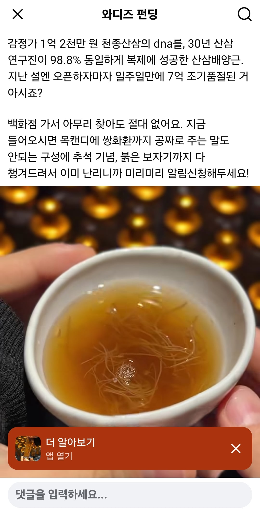
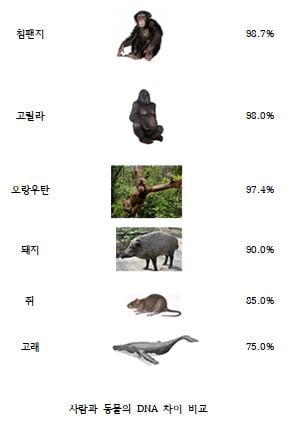

산삼을 배양했지만 대충 인간과 비교하면 침팬지에서 고릴라 수준으로 산삼과 비슷합니다!


산삼을 배양했지만 대충 인간과 비교하면 침팬지에서 고릴라 수준으로 산삼과 비슷합니다!

ㄹㅇ 수족냉증이었어서 체감 ㅈ되게 느낌 ㅋㅋㅋ
원래 겨울에 손발 습진생기고 존나 가려워서 습진 생긴 손바닥 창문에 지지고 그랬는데 ㅋㅋ
와디즈는 진짜 그냥 뭐 믿고 뭘 사는놈이 병신이지
저 정도 차이면 도라지나 더덕 수준 아님?
찾아보니까 전체 dna 일치도가 아님. 사람으로 치면 친자검사 비슷한 정도로 일치도를 보는거임. 저 산삼이랑 그냥 평범한 인삼이랑 비교하면 일치도가 86.5% 정도 나옴.
그러니까 "이 배양근은 원본이랑 거의 빼다박은거임 ㅇㅇ"이란 얘기.
물론 성분이나 효능 같은건 배양근 성장과정에 따라 달라질 수 있을테니 뭐...
산에서 자생하면 산삼
밭에서 재배하면 인삼
바다에 뿌려두면 해삼
(?)
다른거네 ㅋㅋㅋㅋㅋ
산삼이아 인삼이나 먹고 효과 보는 사람 있고 나처럼 먹어도 별 효과 없는 사람도 있음
와디즈 ㅋㅋㅋㅋㅋㅋ
'와디즈 펀딩'
침팬지나 사람이나 고기맛은 큰차이 없을테니 된거 아님?
그럼 산삼으로 침팬지를 만들수있는거임??!
그냥 성분이 유사하다 면 몰라 DNA라고 말을 해놔서 병신인거 티났네
어차피 이러상품은 사치품의 영역이라
실제효능효과 보단 같은 산삼이어도
생김새 크기 뿌리의잔털 생김새등등
에 따라 가격차이가 그냥 천차만별임.
가죽장인이 중국에서 만들면 짝퉁
이태리공장에서 만들면 명품 인거처럼
거의같은 원자재에 퀄리티라도
그 가격에대한 구매가치를 중요하게 생각하는 사치품.
정 먹고싶으면 걍 인삼이나 먹어 어짜피 똑같음
영양 성분을 98.8퍼 복제 했다고 하는게 직관적일거 같은데
성분이 한 두 개가 아니라 또 이상한가
미국에는 흔해빠져서 걍 버린다는 산삼이 한국 산삼보다 사포닌 수치가 높다는 글을 읽었던 것 같다
집에 ㄹㅇ 산삼주 몰래 친구랑 훔쳐먹었는데 ㄹㅇ 눈 펑펑오는 한겨울인데 열이 막 올라서 친구쉑 배란다에서 잤음. 소주잔 딱 석잔씩 먹었는데 그랬음. 뭔가 다르긴 다름.